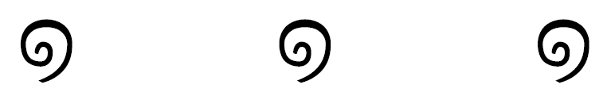

In Germany we call PhD supervisors Doktorvater or Doktormutter. In that tradition I would like to thank my ‘doctor-parents’: Hongji Yang (for his endless encouragement), Andrew Hugill (for introducing me to pataphysics), Jim Hendler (for making me feel like an imposter) and Sophy Smith (for diagnosing me with ‘Imposter syndrome’).
Thanks to my wonderful ‘real’ family (Fred, Sylvia, Alena, Jannie, and Celine) for being alive and well, and being proud of me.
Thank you, Sally, for the fantastic artwork. It captures the spirit of this thesis perfectly.
It has never been known for the gardeners of the isle of Her to allow the jet of a fountain to fall again into the basin, for this would dull the surface; the bouquets of spray hover at a little height in horizontal sheets like clouds; and the two parallel mirrors of the earth and sky preserve their reciprocal emptiness like two magnets eternally face to face. (Jarry 1996)
I dedicate the ‘Ph’ of this ‘PhD’ to my partner Dave. I will henceforth be known as Doctor Fania and he shall be called Dave of Philosophy.
[rɪˈmɛmbə ðiː] 達磨 :) [ˈhæpi] 物 [ˈvɜːsəri] <3 [aɪ lʌv juː]
Last but not least, I want to thank my wonderful computers for their usefullness and uselessness. They have always done exactly what I told them to do—no more no less. They were tools for channeling my creativity into pata.physics.wtf and this thesis. Thank you for 6 years of frustration, procrastination and performance.
Jarry, Alfred. 1996. Exploits and Opinions of Dr. Faustroll, Pataphysician. Cambridge, MA, USA: Exact Change.